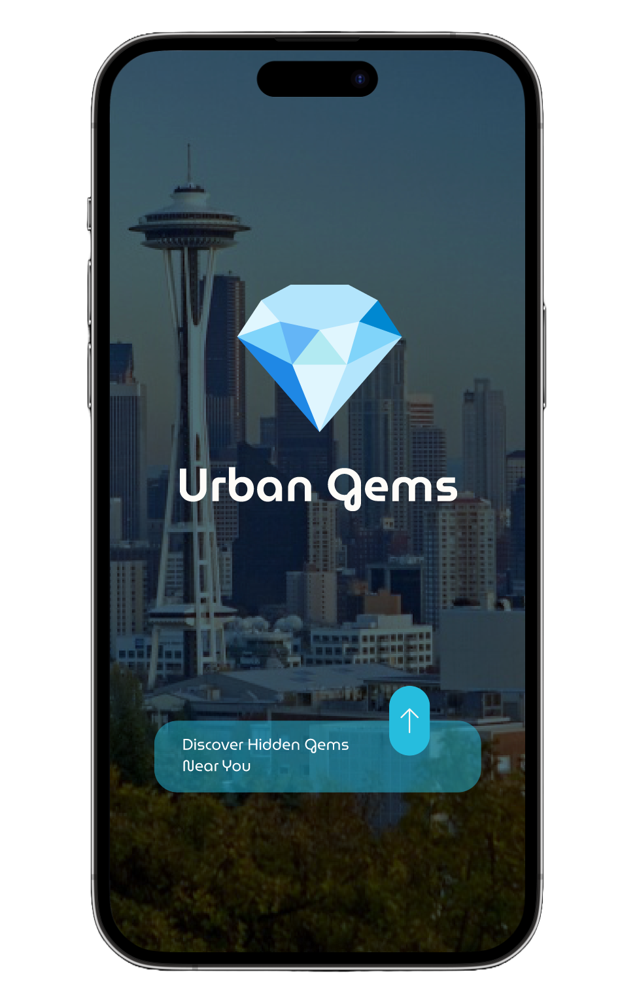
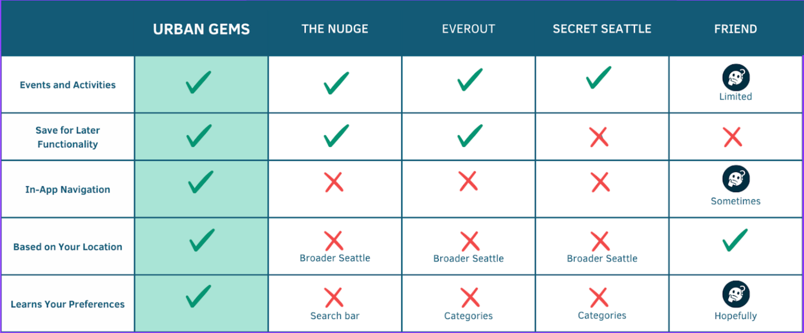
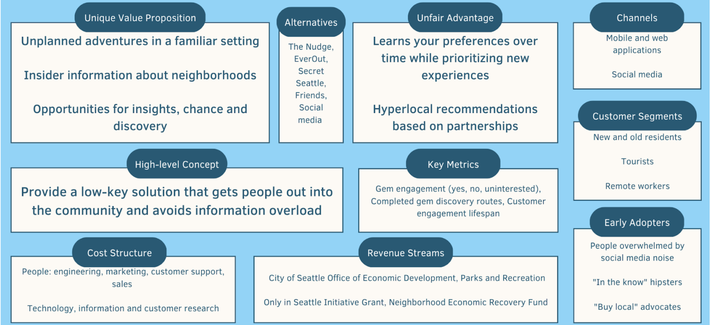

Project management
Calendar, task delegation, alignment, and consensus.
Urban Gems · UX Research & Design
Urban Gems was a five-person UX design project exploring how to make neighborhood discovery feel more spontaneous without making people feel lost or overwhelmed.
We began with four semi-structured interviews, built a mid-fidelity Figma prototype, and later tested it with five people recruited on campus. Testing showed us that our original idea of spontaneity sometimes removed too much information, so we iterated on the prototype to give people clearer cues and smoother next steps without turning the experience into another search-heavy city guide.

01
I served as project manager for our five-person team. A large part of my role was keeping the work moving while making sure decisions still felt shared. I organized the work around our project calendar, coordinated task ownership, helped the team reach consensus when we had different ideas, and kept us aligned on what we were trying to learn and build.
I created the question guides for both our early interviews and prototype testing. I was also responsible for the Lean Canvas and competitor analysis. We collaborated on the Figma prototype, and I focused on keeping screens consistent as different team members contributed. I also directed the promotional video we made at the end of the project.
Calendar, task delegation, alignment, and consensus.
Questions for both early interviews and prototype tests.
Lean Canvas and competitor analysis.
Shared Figma patterns across a collaborative prototype.
02
We conducted four semi-structured interviews with acquaintances who were interested in exploring their neighborhoods. We wanted to understand how people decided where to go, what made an unfamiliar place appealing, and what made them fall back on familiar routines.
People could want to discover somewhere new while still defaulting to places they already knew.
Interest in exploring did not mean people wanted to research a long list of options every time.
Participants were more interested in locally relevant recommendations than broad, generic suggestions.
03
Research helped us understand the problem, but we still had to decide what kind of product Urban Gems should be. I created a competitor analysis and Lean Canvas to help us think beyond individual screens.
Existing discovery tools gave people ways to browse events and places. We wanted to explore something more guided and hyperlocal: start from where someone already was, reduce the amount of searching and planning, and give them a reason to try somewhere unfamiliar nearby.


Our assumption
We intentionally kept early recommendations sparse because we wanted curiosity, rather than research, to drive the experience.
What testing taught us
When we removed too much information, people did not feel intrigued. They were unsure what the options meant or what they were supposed to do.
04
We recruited five participants on campus for short, in-context prototype tests. Because Urban Gems was designed around physically exploring a neighborhood, we did not want to test the idea only by asking people to click through screens at a desk.
Sessions began in Red Square. We chose four nearby locations to act as hidden gems and gave participants the mid-fidelity Figma prototype on a phone. One team member acted out turn-by-turn audio navigation while participants walked to a destination.
At the location, participants saw the arrival experience, captured a memory, and could choose another gem. We used index cards as stand-ins for additional destinations so we could test more of the overall experience without building a separate Figma flow for every location.
At this point, we were mostly interested in whether the overall flow made sense rather than evaluating every interface detail.
Choose a nearby hidden gem.
Follow simulated audio navigation to the location.
Arrive and capture a memory.
Decide whether to discover another gem.
05
Iteration 1
We kept the page deliberately sparse because we thought knowing less would make discovery feel more spontaneous.
Participants did not know what they were supposed to do or what the gem options represented. Adding a category to one gem helped, but the other choices were still unclear.
We added category tags and icons to every gem. People could understand the type of experience without seeing the actual destination too early.
Iteration 2
Participants learned about a gem on the detail screen but had to return to the previous screen to choose to explore it.
The next step was unclear. We first added the choice to explore directly to the detail view, then tried a separate pop-up for additional information.
The pop-up introduced another awkward transition, so we consolidated the experience into one scrollable detail screen with highlights first and more information available below.
Iteration 3
Collections gave people a place to keep memories from the gems they had discovered.
Participants responded especially positively to this part of the prototype.
“I would want to collect all the gems.”
We leaned further into collecting with Polaroid-style thumbnails, a treasure-chest icon, and memory pages inspired by field journals.
06
By the end of the project, we had a tested mid-fidelity prototype covering the experience of receiving a nearby recommendation, deciding whether to explore it, navigating to a location, recording a memory, and discovering another gem.
The biggest change was our understanding of spontaneity. We began by assuming that less information would make discovery more exciting. Testing showed us that spontaneity still needed structure: people needed enough context to understand their choices and enough control to feel comfortable acting on them.
Urban Gems remained a prototype. It was not launched as a commercial product, and we did not measure long-term engagement, recommendation quality, or whether it changed how often people explored their neighborhoods.
07
Our early interview participants were acquaintances who already had some interest in neighborhood exploration.
We tested with five people on a staged route around campus, not people naturally exploring their own neighborhoods.
Navigation was acted out and index cards stood in for some content, so we were testing the overall experience rather than a working location-aware product.
08
09
I directed a short promotional video showing how Urban Gems might fit into someone’s day. The video was a communication artifact rather than evidence that the product worked, but it helped us explain an experience that depended heavily on movement, discovery, and place.
What I carried forward
Urban Gems gave me practice turning early research into a product direction, coordinating a collaborative project, testing an experience outside a conference room, and changing the design when our assumptions did not work the way we expected.
Return to selected projects